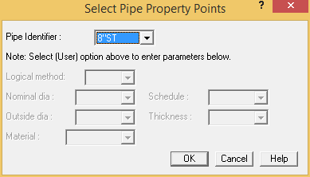
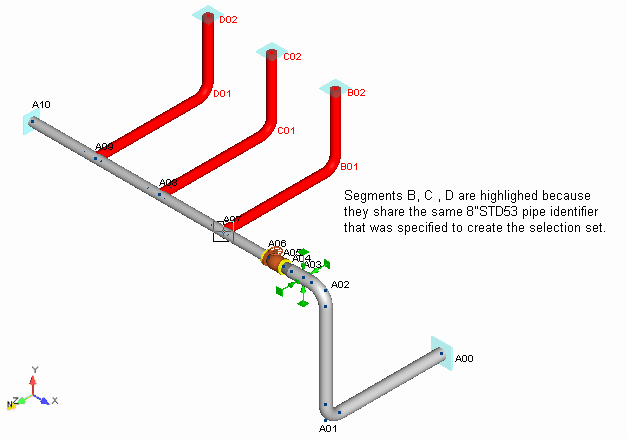

Choose Select > Properties > Pipe Property Points.
- The Select Pipe Property Points dialog is displayed.

- From the Pipe Identifier field, select 8"ST {200STD53}, then press OK to close the dialog.
| Note: |
In this example, a Pipe ID was specified to create the selection set. However, note that options are available for creating a selection set based on Diameter, Schedule, Wall Thickness or Pipe Material. The ability to select components based on pipe properties allows the user to quickly implement design changes. |
